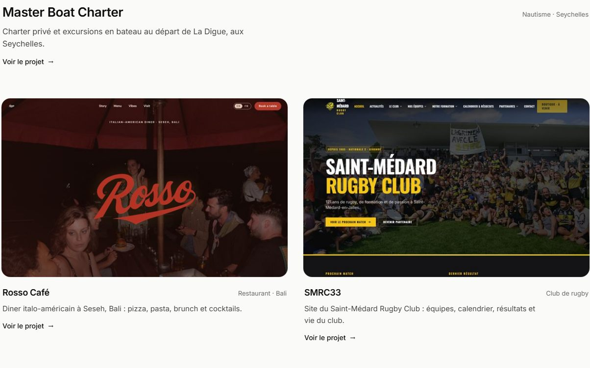

Sites web · Clients · 18 sites en ligne
Sites clients — Réalisations web
Création et optimisation de sites web pour des clients, réalisés en duo avec mon frère : développement, responsive et, selon les projets, référencement naturel pour améliorer leur visibilité sur les moteurs de recherche.
Les réalisations
18 sites en ligne pour des restaurants, des artisans, des commerces, un club de rugby, des services et de l'événementiel, en France et à l'étranger.
Ce que ces sites comprennent
- Des sites responsive, adaptés à l'activité et à l'identité de chaque client
- Selon les projets, un travail de référencement naturel : titres et descriptions ciblés sur le métier et la ville, données structurées, sitemap
- Un objectif de visibilité : être trouvé par les clients sur les moteurs de recherche, pas seulement être en ligne